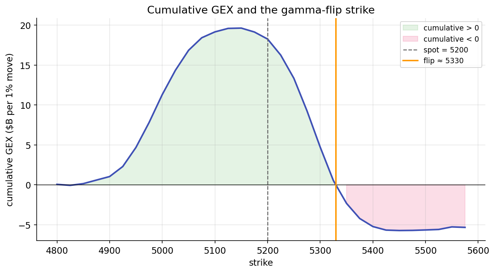

A single strike¶
Between the breath and the stillness, a single strike. Cross it — the world shifts. Stand above — the tape is quiet. Stand below — the tape breathes. We give this boundary a name: the gamma flip.
A total GEX number characterizes the aggregate regime. The gamma-flip strike identifies where, along the strike axis, dealer positioning transitions from long gamma to short gamma. Combined with the current spot, this pair of scalars summarizes the two most actionable pieces of information the regime classifier needs.
The definition is subtle enough that the trading project's first implementation was incorrect. The corrected definition is the subject of this lesson.
The incorrect definition¶
A naive first approach: find the strike \(K^*\) where per-strike GEX changes sign from positive to negative as strikes increase.
Reasonable, at first. Long-put contributions are positive, short-call contributions are negative, and somewhere they cross. Surely the crossing is the transition.
It breaks on any chain where per-strike GEX is non-monotonic. SPY options, driven by retail flow across a wide strike range, can have per-strike GEX that oscillates — positive at 420, negative at 425, positive at 430, negative at 435. The first-adjacent-pair sign change identifies a crossing, but not a meaningful one.
Regime classification cannot rest on an unstable number. Commit 1e90d49 in the trading repo corrected the definition.
The correct definition — cumulative crossing¶
Sort strikes in ascending order. Compute cumulative GEX:
The gamma-flip strike \(K^*\) is the value of \(K\) at which \(C_K\) crosses zero.
This is stable by construction. Per-strike oscillations average out in the running sum. The running sum has a single smooth trajectory: zero, up, peak, down, negative. The zero-crossing marks the point at which net hedging flow changes sign.

At \(K^*\), the contribution of all strikes up to \(K^*\) cancels. Moving spot through \(K^*\) shifts the net aggregate. This is why crossing is regime-changing. For a typical SPX profile — put-heavy below, call-heavy above — \(K^*\) sits on the descending leg, just above spot in calm regimes, closer or below in stressed ones.
Linear interpolation between strikes¶
Cumulative GEX is defined on discrete strikes (for example, 5-point increments). The running sum rarely crosses zero at a quoted strike; it passes between two adjacent strikes. Linear interpolation locates the crossing:
Given adjacent strikes \(K_{i-1} < K_i\) with cumulative GEX values \(c_{i-1} > 0\) and \(c_i < 0\):
The result is a continuous scalar, updated daily, comparable to spot at any time.
One-sided chains¶
An edge case occurs when all cumulative values are positive, or all negative. This happens when dealer positioning is extremely skewed (in an illiquid single name, or a chain with few strikes). The code returns spot — signaling no crossing, and the classifier defers to total GEX alone.
Spot versus flip¶
The classifier in regime.py:classify_regime uses the comparison as one of three short-gamma triggers:
spot < gamma_flip * 0.995— spot has fallen below 99.5% of the flip strike. A 0.5% buffer avoids false triggers on small boundary crossings.total_gex < 0— the aggregate is negative.skew_25d_z <= -2.0— skew is compressing relative to history.
Any single trigger sets the short_gamma regime tag, unless term-structure inversion overrides with vol_inverted. The three triggers are not independent — they frequently co-occur — but each captures situations the others may miss.
A dynamic marker¶
The flip strike is not static. It changes daily as the options chain updates:
- OI accumulation. As expiry approaches, accumulated OI shifts the cumulative GEX curve and the flip location.
- Volume at specific strikes. Large customer trades at individual strikes change per-strike GEX and therefore the cumulative sum.
- Time decay. Gamma depends on time. Near expiry, short-dated gamma dominates, and the flip can move sharply.
In calm markets, the flip remains within a tight band of spot. Days or tens of dollars at a time. Fast, large moves in the flip correspond to material changes in market structure — typically around expiration Fridays or index-level events.
Comparison with SpotGamma's Zero Gamma¶
Practitioners familiar with SpotGamma's methodology will note a distinction. SpotGamma's "Zero Gamma" is computed by holding the chain's strikes and OI fixed and scanning spot until total GEX crosses zero. The flip defined here holds spot fixed and scans strikes. These are different quantities in general.
For chains with gamma concentrated near current spot, the two estimates agree closely. For unusual positioning, they diverge. The trading project uses the cheaper proxy.
Worked example¶
SPX at 5200. Cumulative GEX walked from low to high strikes:
| Strike | per-strike GEX ($B/1%) | Cumulative ($B/1%) |
|---|---|---|
| 4900 | +$2B | +$2B |
| 4950 | +$3B | +$5B |
| 5000 | +$4B | +$9B |
| 5050 | +$5B | +$14B |
| 5100 | +$3B | +$17B |
| 5150 | 0 | +$17B |
| 5200 | -$2B | +$15B |
| 5250 | -$6B | +$9B |
| 5300 | -$8B | +$1B |
| 5350 | -$4B | -$3B |
| 5400 | -$2B | -$5B |
Cumulative crosses zero between 5300 and 5350. Linearly interpolated, \(K^* \approx 5312\). With spot at 5200, spot is $112 (2.2%) below the flip — a short-gamma tilt.
The classifier's threshold is \(0.995 \times 5312 \approx 5285\). Spot at 5200 is below. The short-gamma trigger fires.
Summary¶
- The cumulative-crossing definition is more stable than a per-strike sign-change definition, particularly for retail-flow-driven chains.
- The flip strike updates daily with OI changes, time decay, and spot moves, typically sitting near spot.
- "Spot has crossed the flip" indicates the aggregate hedging regime has shifted; the classifier flags this as a short-gamma condition with a 0.5% buffer.
Implemented at¶
trading/packages/gex/src/gex/gex.py:69 — gamma_flip_strike(per_strike, spot) walks the cumulative sum of per-strike GEX, finds the first adjacent pair with a sign change, linearly interpolates between them. Returns spot when no crossing exists.
The module docstring records the history: the function was originally implemented using per-strike sign detection, which failed for SPY-like chains; commit 1e90d49 replaced it with the cumulative definition.
A single strike, and a regime. Next: how we know, after, whether it worked.